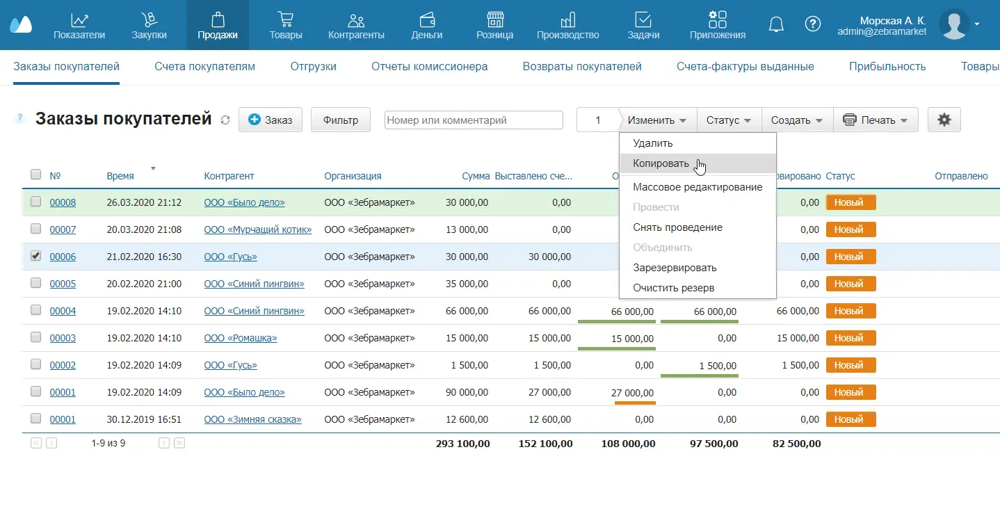
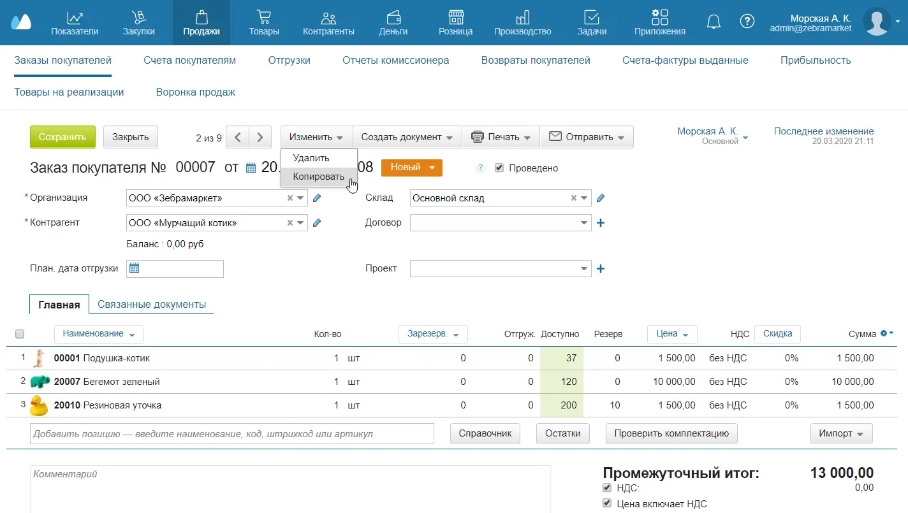

При работе с однотипными документами и объектами удобно пользоваться копированием. Например, так можно создать несколько одинаковых заказов покупателей и потом проставить в них разных контрагентов или скопировать схожий товар и заменить в карточке только название и артикул.
Копировать можно документы и объекты из справочников. Рассмотрим копирование на примере Заказа покупателя.
Копирование из списка объектов
- Перейдите в раздел Продажи → Заказы покупателей.
- Отметьте флажком нужный заказ.
- Нажмите вверху Изменить и выберите в выпадающем списке Копировать. В списке появится новый заказ, который затем можно отредактировать.

Из карточки объекта
- Пройдите в раздел Продажи → Заказы покупателей.
- Откройте нужный заказ.
- Нажмите вверху Изменить и выберите в выпадающем списке Копировать.
- Нажмите Закрыть. Вы вернетесь к списку заказов, там появится новый заказ, который затем можно отредактировать.

Также документы и контрагентов можно объединять.